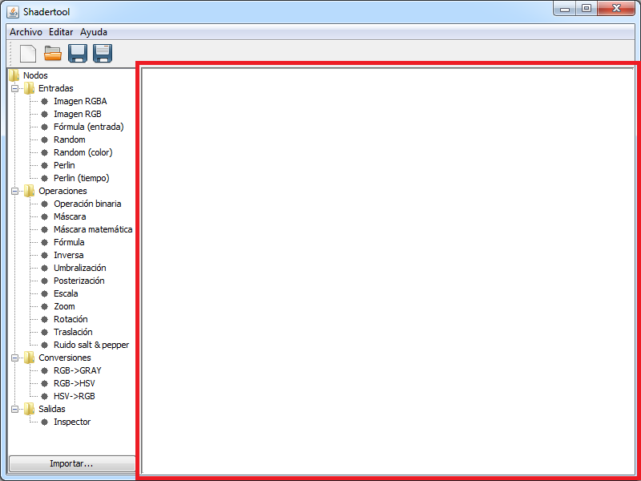

Manual
1 Interfaz gráfica
ShaderTools está distribuído en cuatro zonas: el editor, el árbol de nodos, la menú/barra de herramientas y el Inspector.

1.1 Editor
En el editor se realiza la mayor parte del proceso de tratamiento de la imagen. Las diferentes imágenes y operaciones (en forma de nodos)
son representadas en el editor, así como las conexiones entre las mismas.

1.2 Árbol de nodos
En el árbol de nodos se almacenan todas las operaciones. Éstas se dividen en operaciones de:
- Entrada: entradas de datos (por ejemplo, imágenes).
- Operaciones: operaciones morfológicas (por ejemplo, máscaras, transformadas, etc.).
- Conversiones: conversiones de imagen (por ejemplo, RGB -> HSV).
- Salidas: salidas de datos (por ejemplo, el inspector, que permite visualizar imágenes).
1.3 Menú y barra de herramientas
En el menú y la barra de herramientas se realizan todas las operaciones habituales de edición: abrir, nuevo, guardar...
1.3.1 Crear un nuevo archivo
Para crear un nuevo archivo hay que abrir el menú "Archivo" y pulsar el botón de "Nuevo" () o pulsar el botón
"Nuevo" () en la barra de herramientas.
1.3.2 Abrir un archivo
Para abrir un archivo hay que abrir el menú "Archivo" y pulsar el botón de "Abrir" ( ) o pulsar el botón
"Abrir" (
) o pulsar el botón
"Abrir" ( ) en la barra de herramientas.
) en la barra de herramientas.
1.3.3 Guardar un archivo
Para guardar un archivo hay que abrir el menú "Archivo" y pulsar el botón de "Guardar" () o pulsar el botón
"Guardar" ( ) en la barra de herramientas.
) en la barra de herramientas.
Para guardar un archivo con un nombre diferente hay que abrir el menú "Archivo" y pulsar el botón de "Guardar como" ()
o pulsar el botón "Guardar como" () en la barra de herramientas.
1.3.4 Otras operaciones
Otras de las operaciones que se pueden realizar son reorganizar el grafo de forma automática (en el menú "Editar") o abrir este manual.
1.4 Inspector
El Inspector es una ventana diferente en la que se muestran los resultados de las transformaciones realizadas a las imágenes, visibles al pulsar en un enlace o en un nodo Inspector.

2 Nodos
Los nodos representan las diferentes operaciones que se pueden realizar: carga de imágenes,
procesamiento de las mismas, conversiones...

2.1 Funcionamiento básico
Los nodos representan las diferentes operaciones que se pueden realizar: carga de imágenes,
procesamiento de las mismas, conversiones... Cada nodo tiene una serie de propiedades que
se pueden modificar desde el editor, y dependerán de las características del mismo. Por
ejemplo, a un nodo que aplique una máscara de convolución se le podrán modificar la máscara
o la política de actuación en los bordes de la imagen.
Cada nodo cuenta con una cierta cantidad de entradas y salidas de datos, que son las encargadas de
alimentar con la información necesaria (generalmente una imágen) al nodo, para su posterior transformación.
Un nodo puede enviar sus datos de salida a cualquier cantidad de nodos, pero cada entrada solo puede ser
utilizada una vez, ya que de lo contrario se produciría confusión.
Es posible exportar nodos con unas determinadas características, permitiendo reutilizarlos.
2.2 Tipos de nodos
2.2.1 Entradas
- Imagen RGBA: Permite cargar una imagen a la que aplicar transformaciones con canales RGB y alpha.
- Imagen RGB: Permite cargar una imagen a la que aplicar transformaciones con canales RGB.
- Fórmula (entrada): Crea una imagen basándose en una fórmula por pixel.
- Random: Crea una imagen con valores aleatorios en blanco y negro.
- Random (color): Crea una imagen con valores aleatorios en color.
- Perlin: Crea una imagen con ruido perlin.
- Perlin (tiempo): Crea una imagen con ruido perlin que varia con el tiempo.
2.2.2 Operaciones
- Operación binaria: Operación matemática binaria (suma, producto, máximo...).
- Máscara: Máscara de convolución de NxN.
- Máscara matemática: Máscara de valores matemáticos(media, mediana, máximo...).
- Fórmula: Transforma una imagen mediante una fórmula por pixel.
- Inversa: Inversa de la imagen.
- Umbralización: Umbraliza los tres canales de una imagen.
- Posterización: Posteriza una imagen mediante N umbrales.
- Escala: Modifica el tamaño de una imagen.
- Zoom: Amplia una imagen.
- Rotación: Rota una imagen (en grados).
- Traslación: Traslada una imagen en horizontal y vertical.
- Ruido salt & pepper: Aplica ruido sal y pimienta a una imagen.
2.2.3 Conversiones
- RGB->GRAY: Convierte una imagen RGB a blanco y negro.
- RGB->HSV: Convierte una imagen RGB a HSV.
- HSV->RGB: Convierte una imagen HSV a RGB.
2.2.4 Salidas
- Inspector: Permite visualizar el estado de una imagen en cualquier punto del grafo y guardarla.
2.3 Añadir y eliminar nodos
2.3.1 Añadir un nodo
Para añadir un nodo hay que arrastrarlo desde el árbol de nodos hasta el editor.
Para añadir un nodo exportado anteriormente hay que pulsar en el botón "Importar" ( ).
Se abrirá una nueva ventana donde se podrá elegir el nodo a importar. Los nodos exportados tienen extensión ".node".
).
Se abrirá una nueva ventana donde se podrá elegir el nodo a importar. Los nodos exportados tienen extensión ".node".

Una vez seleccionado el nodo a importar, éste se añadirá al árbol de nodos, en una nueva carpeta llamada "Importados".
También es posible añadir nodos importados arrastrándolos desde su ubicación hasta el editor o el árbol de nodos. Si
se arrastra al árbol de nodos se añadirá a la carpeta "Importados", si se arrastra al editor se añadirá al mismo, pero
no al árbol de nodos.
2.3.2 Eliminar un nodo
Se puede eliminar un nodo de dos formas: seleccionándolo (haciendo click izquierdo sobre él) y pulsando el botón "Suprimir" o
abriendo su menú el opciones (haciendo click derecho sobre él) y seleccionando la opción "Eliminar".
2.4 Modificar propiedades de los nodos
Muchos nodos tienen propiedades que afectan a su funcionamiento (por ejemplo, la máscara de un nodo de máscara). Estas
propiedades se modifican haciendo click derecho sobre el nodo que queremos modificar. Se abrirá un menú donde aparecerán
varias posibles acciones.

La primera propiedad que se puede modificar es el nombre del nodo (propiedad que comparten todos los nodos). Pulsando
en esa opción se abrirá una ventana donde se nos pedirá el nuevo nombre del nodo.
El resto de propiedades dependen ya del tipo de nodo. En el caso del nodo máscara se puede modificar la máscara y la
política de actuación con los bordes.

3 Enlaces
Los enlaces relacionan los nodos entre ellos, conectando los datos de entrada y salida para permitir el funcionamiento del
programa.
Los enlaces se dibujarán con una línea discontinua si la entrada o la salida están sin asignar.

Cuando un enlace tenga tanto su entrada como su salida ya asignadas se dibujará con una línea continua y más ancha. También
aparecerán escritas la entrada y la salida asignadas.

3.1 Añadir un enlace
Para añadir un enlace hay que seleccionar el nodo de origen (haciendo click sobre él) y hacer click en el nodo de destino
mientras se mantiene pulsada la tecla Control. En caso de que la opción de auto-asignar entradas y salidas esté activa, se
asignarán automáticamente siempre y cuando sean únicas (no existan más entradas o salidas) y la entrada no esté ya asignada.
3.2 Eliminar un enlace
Se puede eliminar un enlace de dos formas: seleccionándolo (haciendo click izquierdo sobre él) y pulsando la tecla Suprimir o
abriendo el menú de opciones del enlace (haciendo click derecho sobre él) y seleccionando la opción Eliminar.

3.3 Asignar entradas y salidas
Las entradas y salidas se asignan desde el menú de opciones del enlace (click derecho sobre el enlace). Una vez allí
aparecerán dos opciones: Elegir Entrada y Elegir Salida, donde aparecerán todas las entradas y salidas disponibles. En
caso de que una entrada o salida ya esté seleccionada aparecerá escrito en dicha salida, y las entradas al nodo destino
que estén en uso (bien por el propio enlace, bien por otros) también aparecerán con un mensaje indicándolo.

Si la opción de auto-asignar entradas y salidas está activa, se asignarán automáticamente las entradas y salidas, siempre
y cuando sean únicas (no existan más entradas o salidas) y la entrada al nodo destino no esté ya en uso (asignada).